In this section, I am going to review the features that have been added and that were not in "Ogame".
The guild system is probably the most important addition we have made.
It provides the player with a set of objectives to achieve within 6 guilds: The Collectors Guild, The Traders Guild, The Architects Guild, The Explorators Guild, The Defenders Guild and The Warriors Guild.
Players can progress each guild by completing specific tasks:
mainly by collecting resources for The Collectors Guild,
by trading and transporting resources for The Traders Guilds,
by building facilities for the Architects Guild,
by conducting research and expeditions for the Explorators Guild,
by building defences and winning defensive battles for The Defenders Guild,
by building fleets and winning offensive battles for The Warriors Guild.
Each guild has 20 levels, each with its own requirements and rewards.
By grinding a guild, players will be able to unlock key buildings, technologies, ships and defences, as well as obtaining various bonuses that will enhance each guild's style of play.

To compensate for the loss of multiplayer, we have introduced a simple diplomacy system.
In v1.0, it is fairly basic and only deals with negative relationships between empires and the player.
This does, however, make the world a little more realistic, in that your actions will not go unnoticed and the player will not be able to attack other empires without them retaliating.
If the player spies too often or attacks a rival empire, the latter will retaliate and regularly send fleets to attack and probe the player's worlds.
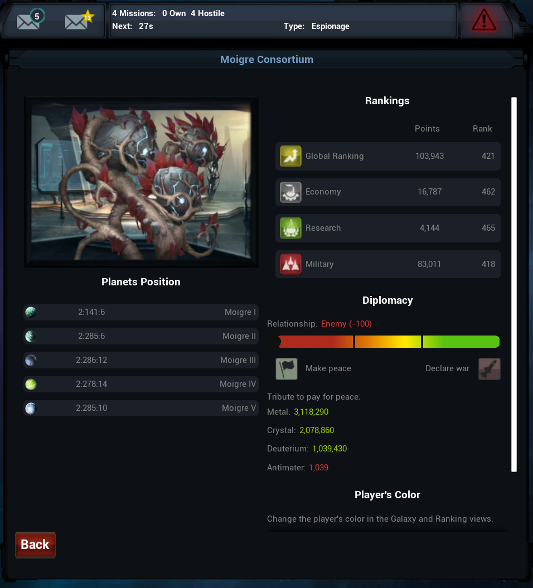
The frequency of an empire's actions is largely determined by the level of the relationship: being a small rival may lead to a few espionage missions and occasional attacks from time to time; on the other hand, having a relationship down to -100 will lead to daily attacks.
The power of the fleet sent depends mainly on the military points of the attacking empires.
To vary the fleets sent out by enemy empires, we have created a pool of fleets with a different distribution of ships: some will be more lethal against defences, others against certain types of ship...
Players will always have the option of making peace with an enemy if they so wish and if they have the resources to pay the tribute demanded by the enemy empire.
The fee varies according to the level of the relationship and the player's points.
A player can also decide to declare war on an empire if he wishes.
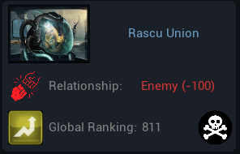
To prevent the player from taking advantage of the game by declaring war on all the weak empires, which will then crush their fleets on the player's worlds, we've added a security feature.
If the player is significantly stronger than another empire, that empire will appear dead and will no longer attack the player with its fleets.
It also gives players another way out of the war: outclassing their opponents by destroying their fleets and defences, which has the effect of lowering their point total.
The Empire window is a feature that already existed in the SpaceWar browser game.
It is designed to help players keep track of everything that is going on in their empire, as it could become overwhelming once they have several worlds to manage.

In From 1 AU, we tried to reproduce this approach by recreating a more polished Empire window to give access to all the details that the player could use.
In version 1.0, the Empire window contains information on current resources ("Resources"), resource production ("Production"), construction and research queues ("Being Built"), available fleets and defences ("Fleets"), buildings constructed ("Buildings") and relationships with other empires ("Relationships").
As part of From 1 AU, the Empire view is unlocked via the guild system, by following the path of the Architects Guild path.
New Buildings, Fleets and Technologies
In From 1 AU, we have added several new buildings, fleets/defences and technologies to enhance the player experience.
Our aim was to enrich the game and not simply add new "recoloured" features.
Thus, all the additions serve a unique and new purpose in the game.
In this section, I will take a quick look at each of them.
New Buildings and Facilities
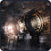
The Particle Accelerator is where antimatter is produced.
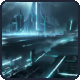
The Antimatter Tank is where the antimatter is stored.
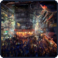
The Intergalactic Market is the facility used to unlock the game's various merchants.
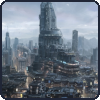
The Training Center is the installation used to unlock the game's various officers.
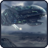
The Extractor is a ship that can be sent to an uninhabited planet to extract resources.
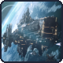
The Striker is a massive ship that uses antimatter as its main weapon.
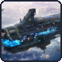
The Convoyer is a massive cargo ship that can carry up to 250,000 resource units (base value).
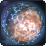
The Planetary Shield is a gigantic defence shield that encompasses the entire planet.
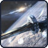
The Antimatter Cannon is a massive orbital defence system that uses antimatter as its main weapon.
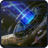
The Graviton Cannon is a massive orbital defence system that creates a graviton field to destroy the most massive ships.
New building class: Orbital Buildings
In from 1 Au, we have added a new category of buildings: Orbital buildings. These massive installations are designed to be built in orbit of a planet at an advanced stage of the game.
Most of them are improved versions of certain facilities already on the planet, and are there to cope with the end-game which tends (in 'Ogame') to drastically slow down the rate of improvement and construction of facilities/ships/technology.
The special feature of orbital buildings is that they don't need space on the planet to be built: they are built in orbit of the planet.
However, this advantage is offset by their high resource costs.
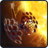
The Orbital Solar Plant enables a massive amount of energy to be produced from space.
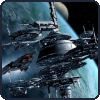
The Orbital Shipyard unlocks massive ships (that could not be built on a planet, like a DeathStar) and orbital defences.
It also significantly reduces the construction time for all ships from this world (similar to the effect of the nanite factory for buildings and facilities).
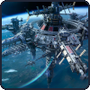
The Orbital Laboratories help unlock some of the most advanced technologies.
It also considerably reduces the research time for all technologies on the planet (in a similar way to the effect of the nanite factory for buildings and facilities).
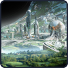
The Orbital Habitat works like a terraformer, providing additional building space on the planet.
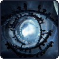
The Orbital Jump Gate reduces the outbound travel time for the fleet departing from this planet.
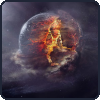
The Artificial Moon allows players to build their own moon from resources.
Moons are quite valuale in From 1 AU and the only other way to create one is by random generation from a post-battle wreackage.
Thus, we have decided to add an (extremely expensive) option for players to create their own moon, so that they won't be deprived of this part of the game indefinitely if they're unlucky.
We have also added 4 new (advanced) technologies to unlock some of the more advanced previously presented additions.
These technologies include: the Orbital Engineering, Particle, Space Jump, and Quantum Technologies.
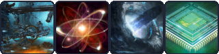
In From 1 AU, an important part of the game is attacking enemy empires or defending your worlds. Victory or defeat can be difficult for the player to predict, as many factors influence the outcome (e.g. fleets involved, rapid fire, technologies, etc.).
This function was not included in "Ogame", but it is crucial for all players who want to make good decisions at all times.
Thus, we decided to include it in the game in a user-friendly window.

As there is an element of randomness in the From 1 AU battle (due to rapid fire), the combat simulator will not be able to predict the particular outcome of your next battle.
However, provided it has all the necessary information, it will be able to simulate the upcoming battle several times and give the most likely average outcome, with details of the number of fleets lost, the chances of victory, the debris fields, etc.
As part of From 1 AU, the Combat Simulator is unlocked via the guild system, by following the path of the Warriors Guild path.
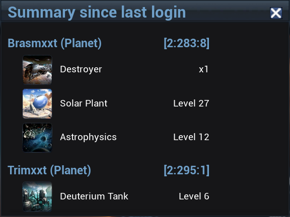
Because it is easy to lose track of everything that is happening in each player's world, we have added a connection summary function.
It summarises everything that has happened since the player last played the game.
In "Ogame", the Auctioneer allows all players to take part in an auction for a perk.
With the other players out of the way, the Auctioneer feature would become very similar to the Import/Export feature.
Thus, in From 1 AU, we have reworked the Auctioneer function so that the player can now buy one fleet per day (as in Import/Export, where the player can buy one perk per day).
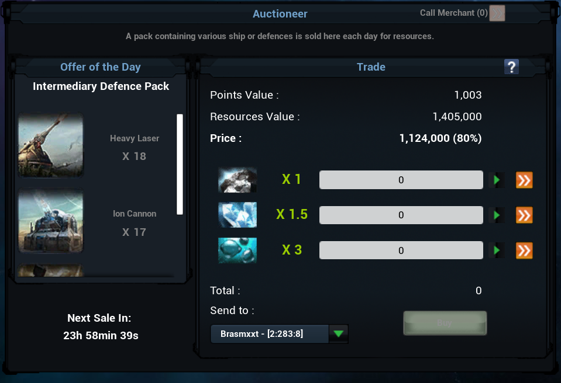
The ships/defences available in the Auctioneer are drawn from a pool of predefined ship/defence distributions.
This allows the player to be presented with different types of fleets with different specialisations.
Some are more focused on light/medium/heavy defences/ships, others on civil and utility fleets.
The Auctioneer's aim is to enable players to buy instantly fleets at a lower price than if they were to build them directly in their shipyards.
However, the trade off is that the player does not get to hand-pick the fleet he buys.
The number of fleets/defences in a daily pack is determined by the player's General Points.
As a result, the feature is accessible and balanced throughout the whole playthrough.
As well as all the features that reset every day, it also increases player engagement and gives them another reason to log in every day.
In "Ogame", the spaceport was used to reduce the cost of fluel (i.e. deterium) to maintain another player's fleet on one of their worlds.
Now that the opportunity to do so has disappeared, we have reworked the Spaceport and given it a new purpose: to reduce the fuel cost of launching a fleet from a planet.
This has the advantage of solving a major problem at the end of the game, namely the huge amount of deterium needed to move gigantic fleets.
The Kardachev Scale is the name given to the post-game in From 1 AU.
The name comes from the real Kardachev scale theorised by Nikolaï Kardachev in the 1960s (learn more).
The bottom line is that there are different types of civilisation operating at different energy levels.
In From 1 AU, this is an option that becomes available when the player reaches rank 1 in their universe.
If chosen by the player, it will clear the universe and fill it with more powerful empires belonging to the next Kardachev scale.
The player can therefore continue to play almost indefinitely on a single playthrough by completing all of Kardachev's scales.
We have put this in place so that we can always offer players a stimulating environment, even if they want to continue their adventure beyond reaching rank 1 in their universe.
During their expeditions, players can sometimes win the favour of a merchant. They can then invoke it to reset a merchant's offer or buy their service free of charge.
Quality of Life Improvments
Along the way, we have also made a number of improvements to the UI to help players navigate more quickly and assess the situation of their empire more easily.
I am sure I have forgotten some of them because, as I write this article, I have the impression that these features have always existed.
However, these improvements include:
- messages can be "asterisked" to prevent them being deleted over time.
- quick access to "asterisked" messages.
- options on how long it takes to delete a message after it has been viewed.
- quick links from messages to various actions (sending a probe, colonisation ship, pre-filled combat simulator, etc.).
- quick links between incoming/outgoing attacks and pre-filled combat simulator.
- quick links to the various guilds.
- redesign of the UI in the left-hand bar to include links to the new panels.
- various information is displayed in the galaxy view (number of probes, recyclers and interplanetary missiles available).
- a quick recycle button in the galaxy panel.
- debris fields are added to the galaxy panel over time to bring the universe to life.
- option to sort the player's planets on the right-hand side by coordinates, maximum space or date of colonisation.
- quick save button (the game is saved automatically when you log in or out of the game, but although we have not reported any crashes in version 1.0, a manual save option is still useful).
- option to change the player's name.
- quick access to the player's rank in the ranks panel.
- an indication of the number of fleets/defences the player can currently build.
- and everything else I have forgotten...